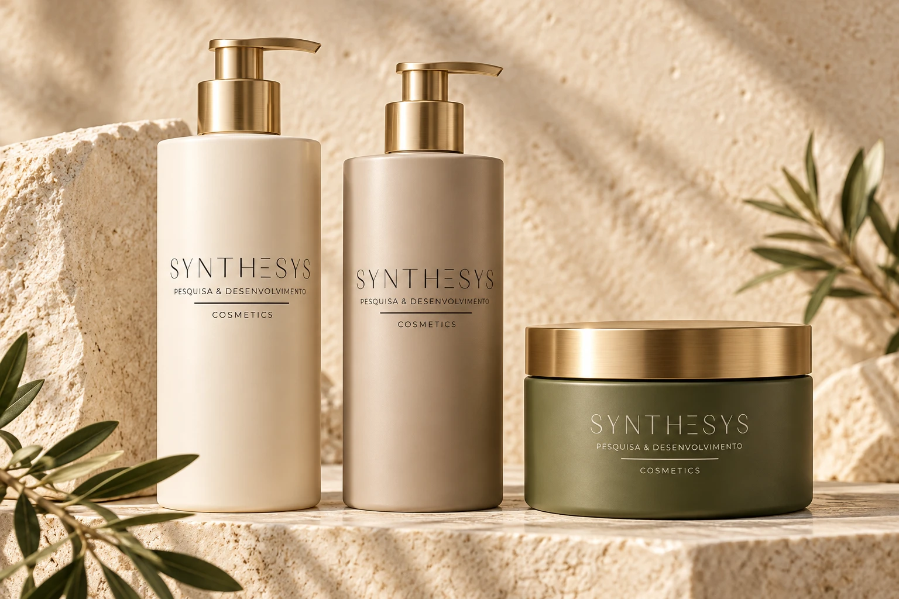
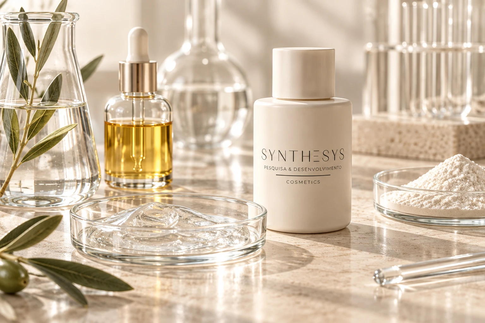

DESENVOLVIMENTO COSMÉTICO
Sua ideia merece
ganhar forma.
Conectamos ciência, criatividade e planejamento para transformar conceitos em projetos com identidade.
Conheça nossos serviços →Sua marca pode fazer parte.
Faturamento do setor brasileiro
em 2025
Maior mercado consumidor mundial
Beleza e cuidados pessoais · 2024
Crescimento dos cuidados capilares
Brasil · 2025
Lançamentos de produtos no Brasil
Beleza e cuidados pessoais · 2025
Fontes: ABIHPEC, Euromonitor International e Mintel GNPD. Dados de 2024 e 2025.
QUEM SOMOS
A SYNTHESYS conecta conhecimento técnico e visão de marca para transformar ideias em projetos cosméticos.
Atuamos em parceria com empreendedores e empresas no desenvolvimento personalizado de formulações, na seleção de matérias-primas e embalagens e na organização das etapas que levam um conceito ao mercado.
Nosso ponto de partida é entender cada marca: seu público, suas referências e o que deseja construir.
SERVIÇOS
Etapas conectadas, com soluções adaptadas aos objetivos de cada cliente.
Pesquisa de ingredientes, desenvolvimento de protótipos e ajustes de desempenho e sensorial para a proposta da sua marca.
Organização do briefing, definição de etapas e acompanhamento técnico da construção de uma linha cosmética.
Apoio à organização documental, revisão de informações de rótulo e avaliação dos requisitos aplicáveis ao projeto.
Pesquisa de embalagens, desenvolvimento visual de rótulos e alinhamento da apresentação ao posicionamento da marca.
Seleção de matérias-primas, comparação de alternativas e análise preliminar de custos para orientar decisões.
Construção do conceito de produto e planejamento de comunicação para apresentar o projeto ao seu público.
CATÁLOGO DE POSSIBILIDADES
Referências de categorias que podem orientar um desenvolvimento personalizado.

Shampoos, condicionadores, máscaras e finalizadores com propostas sensoriais e funcionais próprias.
Hidratantes, produtos de limpeza e cuidados diários desenvolvidos a partir de um briefing.
Conceitos de linhas e experiências de uso pensados para diferentes públicos e posicionamentos.
O catálogo apresenta possibilidades de desenvolvimento. Não é uma oferta de produtos acabados.
FORNECEDORES
Um olhar técnico para os parceiros e materiais que compõem cada projeto.
Pesquisa de alternativas considerando função, documentação técnica, disponibilidade e aplicação na formulação.
Avaliação de frascos, potes, válvulas e acessórios conforme a experiência de uso e a proposta visual.
Mapeamento de parceiros para análises, impressão e outras etapas necessárias ao desenvolvimento.
Nesta versão de teste, as categorias são ilustrativas e não representam parceiros contratados.

ASSESSORIA
Acompanhamento técnico para organizar prioridades e avançar em cada etapa.
Um projeto bem orientado começa com perguntas certas e um plano possível.
A assessoria pode apoiar a revisão de um conceito, a seleção de insumos, a avaliação de custos ou o planejamento de um novo desenvolvimento. O escopo é definido conforme a necessidade de cada cliente.
Converse sobre seu projetoConhecer objetivos, contexto e desafios.
Definir prioridades, alternativas e etapas.
Apoiar decisões e revisar o caminho.
CONTATO
Conte o que você deseja desenvolver. O primeiro contato é o ponto de partida para entender seu projeto.
Área demonstrativa. Os canais oficiais serão incluídos na versão final.